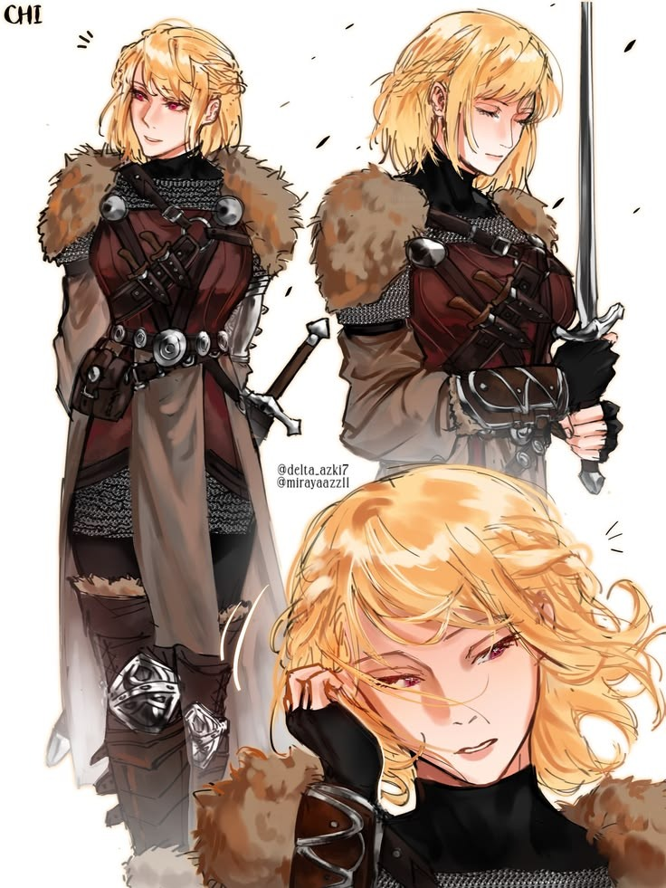

| Amelia Greymane | the Grey Wall Kharven, House Greymane of the Ridgewall as of the king’s chambers at the top of the east tower, Kharven-Seat, spring, six months after the Great War of the North, the hour before the spar |
| Epithet | the Grey Wall. The Shieldwardens gave it to her after the north face of the Thornwall and she lets them; men hear it and think she is hard, which is the wrong half of it. The court, less kindly, remembers her as the Greymane girl with the hand |
| Concept | Stand behind her and nothing gets to you. |
| Stat line | Stage V Splintering · Expert (Faceted) Level 170 · Refined · unclassed until Glory Body III Walked 70%, unread below Glory · Fate II Walked 30%, unread below Glory · Lenses: home + 0 · yield (η) 0.60 |
| Combat grammar | Shield and axe in the line; the longsword at court; she fights to take your head off and says so |
| Aura | rust and gold, a warm red-brown with a gold edge that rises off her shoulders when she sets her feet; when it wakes the room smells of stone for a breath, “cold and wet as the inside of a quarry”, and the fine dust of the floor round her boots creeps down into the cracks between the flags as though something had leaned on it |
| How she moves | tall and broad, feet set apart with her weight square over both, knees bent and heels sunk; the round file shield goes down in front of whoever she is guarding, and the war-axe rides in the ruined left hand. |
| Stack | sustainable 180 to 250 in Anchoring (250), Fortitude (220), Tolerance, Grapple and Command (180) · cap two steps on the hidden scale over the sustainable figure (to 550 on those five) · layers: STONEFAST when called |
| Kit | a ragged wolf mantle over a cracked blue-steel pauldron, etched plate or oxblood leather over mail, a long coat and a red cloak, and the piece people talk about first: a Rare bearded war-axe paid for with a court dress |
| Voice | ”Nobody courts a crown by hitting it with an axe.” speaker type: a Shieldwarden lieutenant who gives everything as a report, flat, and has forgotten how to give it any other way |
I. Identity
| Field | Value |
|---|---|
| Full Name | Amelia Greymane |
| Pronunciation | ah-MEE-lee-ah GRAY-mayn |
| Alias / Title | Lieutenant of the Shieldwardens · the Grey Wall, which the Shieldwardens call her and she lets them · the queen of the north, in later years |
| Race / Lineage | Human. House Greymane of the Ridgewall |
| Age | About thirty-six |
| Family | Wystan Greymane, her father, the Shieldwarden, who knelt in the square at the Seat beside Ulf Stark Godfrey Greymane, her brother, Hand to the King, the Shieldwarden after him her mother, who died when Amelia was fourteen, the winter after she taught her to smoor a fire on the Ridge in later years: her husband Muken Moto, King of the North, married twenty years; her sons Sodoku, the crown prince, and Sonzai, thirteen, and the younger Tenma, twelve, and Kimizu, ten; her daughter Mizuyi, fourteen, taken at her betrothal supper |
| Realm / Faction | House Greymane and the Shieldwardens; posted to the Seat’s corridors since the war, and wanting them back on the ridge where they belong |
| School and sect rank | The Greymane yard and the shield-line; she taught herself the axe when her father said a Greymane daughter did not carry a shield on the ridge |
Renown
| Among | What they say of her |
|---|---|
| the public | nobody outside the house knows her name yet |
| the army | the Shieldwardens call her the Grey Wall; the twenty who walked off the Thornwall’s north face with her would hold any ground she pointed at; twenty years on the Shieldwardens still sing of the whole night she held the north face of the Thornwall with a file shield and an axe |
| the court | three failed presentations to river-house lords, which the court remembers and she does not discuss |
| Field | Value |
|---|---|
| Catalyst Event | The north face of the Thornwall, the second night, when the Keld came over: thirty-one Shieldwardens on her section, held till the Byakuya archers came up, and twenty walked off it |
| Refusal | She will not be bought, not with a smith for her pauldron and not with a crown |
| Conviction | You stand in the line for the one beside you. She has stood in front of other people so long she does not know what she is with nobody behind her |
| Arc kind | Positive: a wall that learns it can be leaned on |
II. Soul Architecture
| Field | Value |
|---|---|
| Level | 170; it holds Splintering (101) and would hold Glory (115) and Refraction (130), and no Residual Strain builds in her short of 200 |
| Temperance Stage | V, Splintering · Expert |
| Path | Body III Walked 70% · Fate II Walked 30%. Body carries the shield and the axe; Fate carries the line, the man on her left and the man on her right |
| Mastery | unread on both roads: Mastery is not read below Glory |
| Yield (η) | 0.60 |
| Lenses | home Petralon + 0 held, under the Expert’s count of two; the Fixatio of STONEFAST is the house’s lens, carried in its drill, never harmonized by her |
| Soul Crystal | Faceted |
| Crystal State | Refined; it took a hairline on the Thornwall and holds, like the pauldron |
| Class | unclassed until Glory |
III. Wellspring Harmonizations
| Wellspring | Folk name | Depth | Got from | What it bends in her |
|---|---|---|---|---|
| Petralon | the Foundation Stone | working | the Wellspring under the Ridgewall, the house’s for generations | every load she bears handed down through her and into the ground, the slow settling of a foundation accepted as the price of never cracking |
IV. Primary Stats
| Primary | Total | Mean |
|---|---|---|
| Vitality | 890 | 111.25 |
| Ardency | 340 | 42.5 |
| Gnosis | 200 | 25 |
| Dexterity | 700 | 87.5 |
| Harmonics | 220 | 27.5 |
| Resilience | 880 | 110 |
| Tempering | 200 | 25 |
| Dominion (seven, Throne apart) | 320 | 45.71 |
| Throne | not opened | · |
| Field | Value |
|---|---|
| Pool | 3,750 |
| Spent | 3,750 |
| Unspent | 0 |
V. Sub-Stats
| Primary | ||||||||
|---|---|---|---|---|---|---|---|---|
| Vitality | Fortitude 220 | Absorption 140 | Constitution 160 | Hemostasis 40 | Regeneration 40 | Filtration 20 | Tolerance 180 | Threshold 90 |
| Ardency | Flux 40 | Alacrity 30 | Depth 30 | Penetration 160 | Compression 40 | Cascade 10 | Overchannel 0 | Density 30 |
| Gnosis | Perception 40 | Acuity 20 | Forecast 30 | Fluency 0 | Retention 40 | Analysis 20 | Cognition 10 | Vigilance 40 |
| Dexterity | Celerity 40 | Reflex 150 | Finesse 30 | Economy 100 | Evasion 20 | Grapple 180 | Feint 20 | Sequence 160 |
| Harmonics | Attunement 30 | Projection 10 | Breadth 10 | Stability 110 | Empathy 30 | Synergy 30 | Axis 0 | Suppression 0 |
| Resilience | Integrity 160 | Ward 50 | Persistence 60 | Anchoring 250 | Fortification 140 | Hardening 50 | Oath 150 | Continuity 20 |
| Tempering | Clarity 30 | Overflow 0 | Maturity 40 | Coherence 50 | Yield 20 | Ceiling 10 | Capacity 30 | Longevity 20 |
| Dominion | Radius 20 | Sovereignty 10 | Sense 30 | Gravity 20 | Pressure 40 | Command 180 | Fate 20 | Throne not opened |
Field
Note
Value
Anchoring 250 is thirty years of holding a shield, and Fortitude 220 and Tolerance 180 are what it cost. Grapple 180 and Sequence 160 are the axe: the beard over the rim, the pull, the hew, one after the other without a gap. Command 180 is twenty Shieldwardens who would go back up the north face if she asked.
VI. Force of Hand
| Measure | Figure | Feat | Carried by |
|---|---|---|---|
| Strike Force | Penetration 160 | — | Penetration 160 on the axe’s edge |
| Lifting | Fortitude 220, Constitution 160 | — | Fortitude and Constitution |
| Travel speed | Celerity 40 | — | Celerity 40 |
| Reaction | Reflex 150 | — | Reflex 150 |
| Durability | Fortitude 220 | — | Fortitude 220, more behind a shield |
VII. Aether Flow
| Measure | Figure |
|---|---|
| EU Reserve | 396,497 EU |
| Flux Density | 6,000 EU/g |
| AU/s | 2,700 |
| From full | empties in 2 minutes 27 seconds at full output, Starvation at 2 minutes 12 seconds |
| Recovery | ten per cent a minute at rest |
Spending tells
| Reserve left | What shows |
|---|---|
| half | the rust goes out of the gold and leaves it thin |
| a quarter | the shield-rim ring goes flat, like a cracked bell |
| a tenth | the aura flickers gray and her left hand starts to shake |
VIII. Traits
Full accounts: Amelia Greymane — Abilities
Below Glory her Mastery is unread, and every Trait works at its base.
| Trait | Kind | Source | Path and Form | Gates | What it does | Limit | Tell | Cost | Counter | Numbers |
|---|---|---|---|---|---|---|---|---|---|---|
| THE GREY WALL | Primary | — | Path Body · Lens Petralon · Form Shape | none on the card | She steps in front of you before she has thought about it, and whatever was coming for you lands on her shield and goes into the ground instead. | She does not know what she is with nobody behind her, and with nobody to guard the Trait goes quiet. Its flaw is a foundation’s: it hands down into the ground whatever presses on her, and nothing ever asked it to hold on, so a pull parts it. She learned it on the hall floor: she had Mizuyi by the back of the robe, set her heels and handed everything to the ground, and the ground took all of it and made no difference, because the dark never pressed on her once; it pulled. | She steps in front before she has thought about it. On her window: [Primary Trait: quiet] standing alone in a doorway with an empty passage at her back, and [Primary Trait: woken · one behind] when she finds herself between Muken, on his knees, and the place the dark opened. | Nothing she counts. | Take away whoever is behind her; or pull, which it was never asked to answer. | Anchoring and Fortitude read one step high on the hidden scale while someone is behind the shield, no reserve she counts |
| ELEVEN NAMES | Secondary | — | Path Fate, Walked 30%: the line, the man on her left and the man on her right · Lens Petralon, away from its home · Form Bind | none on the card | While she keeps the count of her dead, the line beside her does not break, and fear does not get into the file | It is grief that will not move: she cried for a week when her mother died and then stopped, and did not cry again for six years. | Her lips moving at night before she sleeps; the night Mizuyi was taken she said them going down the east tower stair, one step to a name, and her mouth went on to a twelfth before she shut her teeth on it. Mizuyi is not on her shield: eleven nicks inside the rim, and eleven when they bury her with it. | It costs her at night. | Nothing in a fight; it is a count, not a guard. | No reserve; eleven names, every night; thirty-one held the section and twenty walked off it |
| NO HOOKS | Passive | — | No working: this is what she is · Lens none, no Wellspring · no Form | none | There is nothing hidden in her for a read to find; she wants what she says she wants | She cannot lie or bluff, and has stopped trying. | She says the thing. | Nothing. | Simply ask her. | — |
IX. Skills and Abilities
Full accounts: Amelia Greymane — Abilities
Skills
| Skill | Cues / mechanics | Learned where | Priced by (Sub-Stats) | Mark | Rank |
|---|---|---|---|---|---|
| The shield-line | rim to rim, knees bent, the man on your left | the Greymane yard, and the Thornwall | Anchoring, Fortitude | Mastered | Journeyman |
| The war-axe | beard, edge and spike; the hook and the hew | taught herself, when her father said no | Grapple, Penetration, Sequence | Drilled | Apprentice |
| The longsword | the court blade, the arming forms | the yard, by duty | Reflex, Economy | Trained | Apprentice |
| Command | twenty Shieldwardens, a report given flat, numbers first | the north face | Command, Pressure | Drilled | Apprentice |
| Mending her own kit | rivets, lames, leather; she will not pay a smith a month’s wage | ten years of being too proud to | Finesse | Trained | Initiate |
| Smooring a fire | rake the coals into one close heap, bury it under its own ash, press the ash flat with the back of the shovel, then a palm laid flat on it to feel the warmth come up; a fire smothered right is alive in the morning | her mother, on the Ridge, the winter before she died, when Amelia was fourteen | — | Held | — |
Techniques
| Technique | Kind | Mark | Source | Path and Form | Gates | What it does | Limit | Tell | Cost | Counter | Numbers |
|---|---|---|---|---|---|---|---|---|---|---|---|
| THE STONE IN THE WALL | Signature art, Greymane | — | — | — | — | Stand behind her and nothing gets to you. | — | — | It only works for somebody else: with nobody behind her it goes quiet, and she does not know what she is. Every fight sinks her a little deeper into her own stance. | Take away whoever is behind her; pull her, lift her or fight her on ice; let go of the hooked shield; break the file’s end and roll it up. | — |
| THE HOOK AND THE HEW | Signature Technique | Drilled | Lived | Path Body · Lens Petralon, for the set of her heels; the pull and the hew are honest steel · Form Strike | none on the card | The beard of the axe goes over your shield-rim, she drops her whole weight back from the heels, you come forward off your feet, and the edge comes down on what the pull opened. | The hook needs a rim, a limb or a haft to catch, and a man who lets go of his shield when he feels the beard takes the pull out of it. | The axe-beard goes over the rim. | About three per cent of her reserve to set her Anchoring through the pull and the hew; near 12,000 EU. | Let go, or carry a shield with no rim to catch. | — |
| THE GREY FILE | School Art, Greymane | Drilled | Taught | Path Body, with the Walked Fate Path’s share for the line · Lens Petralon · Form Shape | none on the card | Greymane shields locked rim to rim, so a blow on one shield goes down through every pair of boots in the line. | Its ends. | Shields locking rim to rim. | The file, not her. | Break the file’s end and roll it up. | Paid by the file, not by her |
| SHIELD-HANDS | House Drill, Greymane | Held | Taught | No working shown in it: the yard’s drill for a Shieldwarden caught without a shield · Lens none · Form Shape, barely | none | No shield, so the hands cross palms out before her chest, a wall of two hands, and take what was meant for the heart. | Flesh is not a shield and stops only what it can be spent on. | The hands crossing. | No reserve; the hands. | A point fine enough to go through a palm and keep going. | — |
Vows
| Field | Value |
|---|---|
| — | None sworn; the eleven names are kept every night as if they were one |
Releases
| Release | Kind | Mark | Source | Path and Form | Gates | What it does | Limit | Tell | Cost | Counter | Numbers |
|---|---|---|---|---|---|---|---|---|---|---|---|
| STONEFAST | First Release, Greymane | Drilled | — | Path Body · Lens Petralon, with the Fixatio the house’s release names; the Fixatio is the house’s lens, carried in its drill, never harmonized by her, and fired at the away rate · Form Shape | none on the card | Her heels sink, every joint locks into one column, and she stops being a thing that can be knocked back. | The feet: set, she cannot step. | — | About four per cent of her reserve to set, near 16,000 EU; it holds as long as she does not move her feet. | Pull her, lift her, or fight her on ice. | — |
Domain
| Field | Value |
|---|---|
| Domain | None. |
X. Spirit Axes
| Person | Bond | Axis weight | What flows across it |
|---|---|---|---|
| Godfrey Greymane | her brother | 30 | — |
| The eleven | Torvald, Ebbe, Hamund, the two Ashcroft lads and six more | 25 | said every night |
| Muken Moto | her king in the year the continents split; married that year, and her husband of twenty years in later years | 5, new, an hour old in the year the continents split; not known since | his weight, which she takes through her knees and shins into the stone |
| Wystan Greymane | her father | severed | — |
| Mizuyi Moto | her daughter, taken | not known | — |
| Sodoku Moto | her son, the crown prince | not known | he has her Greymane stance and her proverb |
| Sonzai Moto | her son | not known | he said “not to send his mother” from the west wall |
| Field | Value |
|---|---|
| Godfrey Greymane | she came up the tower stairs because he has been sleeping three hours a night since midwinter, and when she asked him why he said it was the king |
| Muken Moto | formed across the low table when he took her ruined hand and it did not crack; she sat beside him on the window seat with her cracked shoulder against his and let him lean on it, and cried for the first time in six years; twenty years on, past the second bell in the emptied hall, he said Mizuyi’s name and wept and leaned, and she put her shoulder into his arm as she had on the window seat, then he opened her ruined hand finger by finger and laid in it a grain of rice from Mizuyi’s place: “There. See?” “Didn’t crack.” |
| Wystan Greymane | he took her to court three times and then rode south to the Kurenai blade |
| Mizuyi Moto | Amelia had her by the back of the robe, between the shoulders, full fist, her weight on it, and the dark took her in order, hand, wrist, elbow, shoulder: “It went out of my fist like wet line.” She thinks it was the left hand that held the robe, the ruined one, and will never know |
XI. Resistances
| Against | Resistance | Carried by |
|---|---|---|
| The blow | strong behind a shield | the Grey Wall and Petralon |
| Reads for want and hostility | nothing to find | NO HOOKS |
| Fear in the line | strong | ELEVEN NAMES |
| Grief | stuck in the year the continents split; she does not cry, which is not the same as not grieving. Twenty years on she weeps without a sound, the tears running down “steady as meltwater off a roof”, and does not lift a hand to them | — |
XII. Physical Description
| Feature | Description |
|---|---|
| Build | She is tall, near enough the king’s own height, and broad through the shoulders the way a woman gets from carrying a shield for ten years. |
| Hair | Her hair is a bright warm gold, cut short and ragged at the jaw so it cannot get in her eyes in a fight, with one thin Shieldwarden braid drawn back from the temple over the ear; the wind gets into it on the road and she shoves it back with a gloved hand. |
| Face and eyes | Her face is long and pale, the Greymane face, all straight lines, with a nose that was broken once and set a little to the right, and a thin white scar running from her left cheekbone back toward the ear. |
| Left hand | Her left hand is ruined: the knuckles ridged with white scar and lumped where the bones broke and knitted, the two smallest fingers set crooked, bent toward each other like old men leaning together on a bench, a puckered burn the size of a coin on its back, and the palm callused shiny and yellow from the axe-haft. |
| Clothes | She wears a black high-necked undershirt under a coat of mail, a fitted oxblood leather cuirass over it crossed with buckled straps and hung with knives, a broad belt with round steel bosses and a pouch, a heavy fur mantle across both shoulders with a round steel boss at each, and a long split coat of gray-brown wool to the shins; leather bracers bound with steel, black fingerless gloves, tall boots with steel knee-cops and fur at the tops. |
| Weapons and smell | A longsword rides at her hip at court. |
XIII. Psychology
| Field | Value |
|---|---|
| Core Wound | Three young lords bowed and took her hand to kiss it, felt it, and looked like they had picked up a dead bird |
| Flaw | She will not let anyone carry anything for her, a smith or a king, and calls it not being bought |
| Desire | Her Shieldwardens back on the ridge, a pauldron she mended herself, and to know what she is for when the war is done |
| Fear | Forgetting one of the eleven |
Voice block
| Field | Value |
|---|---|
| Speaker type | a Shieldwarden lieutenant who gives everything as a report |
| Lying tell | none; NO HOOKS, and Fluency 0 |
| Notices first | the footing, then the exits, then whether the man across the table wants something |
| Speech length | a report: flat, in order, and done (“That is the whole of it. That is my report.”); then, when it runs out, nothing, or the long run she cannot stop |
| Wit | dry, by stating the plain fact (“He’s leaving it on the stair.”), and spite when it is earned, mostly in her head: Godfrey is “you old crow”, Cozbi Mahuo “you olive-coated post-clerk” |
| Accent features | the Ridge: “You’ll not”, “you’ll keep your filthy mouth off her”, contractions always, and the Ridge words, smoor for banking a fire under ash |
| House words and sayings | ”Hold your ground and let the day come to you”, her father’s, his father’s and the whole Ridge’s, said to her own sons in the yard a hundred times; “Don’t saddle a horse you cannot feed”, her proverb, which Sodoku turned on Sonzai at the west gate; a Greymane does the work in front of her; dents are left in a harness to vouch for the one who wears it |
| Sentence length | flat, short, set down one at a time like stones in a wall; then, when it cracks, a long run she cannot stop |
| Contractions | always |
| Pet phrase | ”I’ll be honest with you, because I don’t know how to be any other way” |
| Habit | laying the axe down with the blade turned away from the person she is talking to, a courtesy of the old north |
| Never says | that she is frightened, except once |
| Stress shift | flatter, until the crack |
| Grief shift | she wipes her eyes with the back of the ruined hand, hard, as if the tears insulted her |
| Joy shift | the corner of her mouth, the second crack in the ice, and then she threatens someone |
| Sample line | ”Six years. Six years, and it’s a boy king in a dressing gown that does it. Godfrey’s never to hear about this, do you understand me? Never. I’ll put that axe through the door.” |
XIV. Equipment
| Item | What it is | Grade | Rarity | Rung | Bonded |
|---|---|---|---|---|---|
| The war-axe | a bearded blade as long as a man’s forearm, a hooked spike at the top, a long ash haft | D | Rare | Linepiece | no |
| The longsword | a plain northern arming sword with a long grip, carried at court | — | Common | — | — |
| The left pauldron | overlapping blue-steel lames on both shoulders, riveted | E | Uncommon | Sidearm | — |
| The ward-plate | fitted chest-plate over a quilted gambeson of oxblood red | D | Rare | Linepiece | no |
| The oxblood cuirass and the mail | fitted oxblood leather cuirass over a coat of mail | — | Uncommon | — | — |
| The file shield | round Shieldwarden’s shield, gray-faced, the rim bound in iron with a lip for locking | — | Common | — | — |
| The road kit | wolf-fur mantle, red cloak, split coat, belt, bracers, gauntlets, gloves, boots and a dented helm | — | Common to Uncommon | — | — |
| The wedding knife | the knife she carried up the coast road in her wedding linen; gone south with Mizuyi, and taken off her by the Post guards at Sum-gol | — | — | — | — |
| The queen’s cloak | the long red cloak of a Moto queen, worn over Greymane gray at the betrothal supper | — | — | — | — |
| Item | Details | Look | Maker’s mark | Shown off | What people say | Price |
|---|---|---|---|---|---|---|
| The war-axe | a bearded blade as long as a man’s forearm, a hooked spike at the top, a long ash haft; the steel dark with oil, the edge a clean bright line Item Tier Proofed about two kilograms, head-heavy on a long haft beats mail and Marked plate, fails against Proofed harness and up, though the hook does not ask | an ash haft gone yellow, wrapped in rawhide at the grip and worn as shiny as her palm, rehung twice by her own hand; a nick in the beard from a shield-rim on the Thornwall, filed down and not out she sold the dress from the third presentation to a river-town draper and walked what it fetched, about twelve gold, up to a smith at Galecross | proof-mark a Galecross smith’s stamp under the beard | across her back at every door in the Seat, including the ones where a steward asks for weapons, and nobody has yet asked her twice | the Shieldwardens tell the story of the dress, and she will confirm it if asked | — |
| The longsword | plain beats cloth and hide, fails against plate | a straight blade and a steel guard curling down at the ends, the yard’s sword, cleaned by duty and worn only where an axe would start an argument | — | — | — | — |
| The left pauldron | under the fur, its second lame carries a hairline crack, old and badly hidden; Muken says it will split on the next hard blow to the shoulder, and she will not let the king pay to fix it stamp Marked | overlapping blue-steel lames on both shoulders, riveted, scratched bright along every edge, one rivet on the left that does not match; she has drilled the crack at each end to stop it walking, and it has walked | — | she taps it | every Shieldwarden knows which lame | a smith wants a month’s pay for it |
| The ward-plate | stamp Proofed | dull steel cut with a fine lattice of etched lines, the old Greymane ward-pattern their grandfathers cut into the stones of the ridge; it was a dead cousin’s, let out at the shoulders by her own hand, and the seam shows | proof-mark the Ridgewall’s stamp under the arm | she doesn’t polish the lattice, so it reads like a scar | it is the one thing the house ever gave her, and it was a quartermaster who did not ask | — |
| The oxblood cuirass and the mail | fitted oxblood leather cuirass crossed with buckled straps and hung with three knives, over a coat of mail and a black high-necked undershirt plain | boiled leather gone almost black at the bends, the knives plain and brown-handled and riding butt-down across the chest; the mail shows at the shoulder and below the waist, small riveted rings patched here and there in brighter links she wears it on the road | — | — | the knives are for rope, hooves, bread and the man on top of you, in that order | — |
| The file shield | plain | painted over twice, the rim bitten and hammered back; inside the rim are eleven small nicks, and she would tell you what they are if you asked, and nobody has | — | — | — | — |
| The road kit | rough brown wolf-fur mantle with a round steel boss at each shoulder, long cloak of dark red wool, split coat of gray-brown wool to the shins, a belt of round steel bosses with a pouch, bracers bound with steel, scarred gauntlets, black fingerless gloves, tall boots with steel knee-cops and fur at the tops, a dented helm plain | the pelt matted and ragged where blades have caught it, the leather of the gauntlets cracked at the knuckles; she has recut the last two fingers of the left as one with her own awl, to fit what the hand is | — | she doesn’t notice she is wearing it | she has drunk out of that helm, and worse than tea | — |
XV. Temperance Record
Level log
| Levels | Where they were earned |
|---|---|
| 1 to 100 | the Greymane yard, the shield, the axe she taught herself |
| 101 to 110 | the war’s last year and the Thornwall |
| 111 to 170 | the twenty years after the four worlds parted |
Stage ledger
| Stage | Name | Catalyst | Bought | The story in a line |
|---|---|---|---|---|
| I to III | — | the house way, by the yard | — | — |
| IV | Flourishing | the north face of the Thornwall, held till the archers came | — | — |
| V | Splintering | surviving the Sin of Wrath in the cedar wood, a force far more than two ranks above her | — | — |
| Field | Value |
|---|---|
| Next gate | Stage VI, Glory Catalyst: a soul-cost accepted for something, chosen knowing the price |
XVI. Fracture Log
| Event | Layer | Status | What it left |
|---|---|---|---|
| Her mother’s death | Core | unprocessed | she stopped crying |
| The north face of the Thornwall | Attraction | processed | ELEVEN NAMES |
| The window seat | Core | processing; she cried | — |
Lore
Full account: Amelia Greymane — Lore
Ties
| Person | Who they are to her |
|---|---|
| Muken Moto | her king; an hour across a low table, a hand that did not crack, and a spar in the yard. |
| Godfrey Greymane | her brother, Hand to the King, who listens at doors. |
| Wystan Greymane | her father, who knelt in the square beside Ulf Stark. |
| The eleven | Torvald, Ebbe, Hamund, the two Ashcroft lads, and six more. |
| Lorn Stark | who saw the king laugh from the yard. |
| Mizuyi Moto | her daughter, fourteen, taken out of her fist at the betrothal supper; held at the foot of the Sum-gol Post’s steps. |
| Sodoku Moto | her son, the crown prince. |
| Tenma Moto | her son, twelve. |
| Kimizu Moto | her son, ten. |
| Sonzai Moto | her son; on the west wall with Lorn the night his sister was taken, and he said not to send his mother. |
| Cozbi Mahuo | the man at the top of the steps, whom she means to outlast: “I’ve a long memory and two good feet.” |
Later years
By these years she and Muken have been married twenty years.
| Field | Value |
|---|---|
| Her report | On her knees on the hall floor, to nobody: “I had her by the robe. Back of it, between the shoulders, full fist. I had my weight on it. She went in the order he took her. The hand, then the wrist, then to the elbow, then the shoulder. … That is my report.” Her right hand lay open, palm up, and the ruined left held it still because it was shaking. |
| What she knows | The dark pulled and never pushed, and her Trait and her house’s whole idea hold the ground and keep nothing; she heard at last which word the Ridge saying leans on, “Hold your ground”. Rashani Zettari said Mizuyi was on her feet when he looked. Muken’s promise went into the Yukari lord’s book and will be on him until it is paid or it breaks him. |
| That night | She banked every brazier in the hall the Ridge way, then found her heels set between Muken and the round of damp stone where the dark had opened; spilled rice pressed into the knees of her gray wool skirt, and she did not brush it out. She thinks Godfrey was the shadow listening under the side door. |
| The grain | A grain of rice from Mizuyi’s place, laid by Muken on the axe-haft callus of her ruined left palm. She closed the hand on it, as far as the hand would close. |